Task 03 - Monitoring with Application Insights (20 minutes)
- The App Insights Instrumentation key property is defined here under the appServiceApp resource
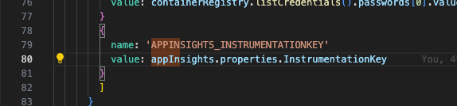
- The App Insights resource is deployed here in the .bicep file
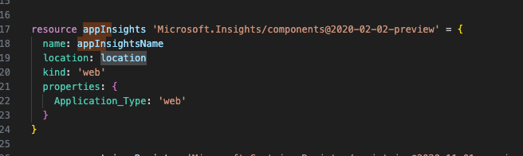
- Go to Application Insights and select “Application Dashboard”.
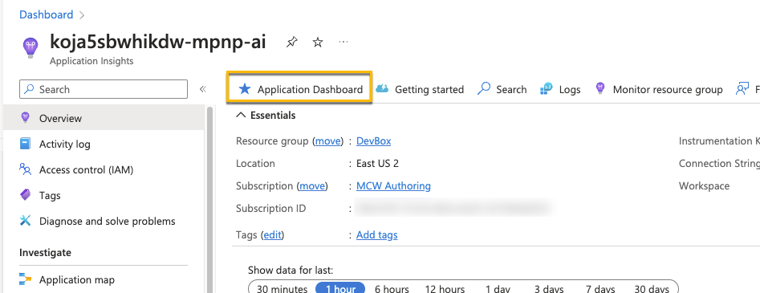
- Select “Edit” to explore what kinds of changes and updates you can make to the default dashboard
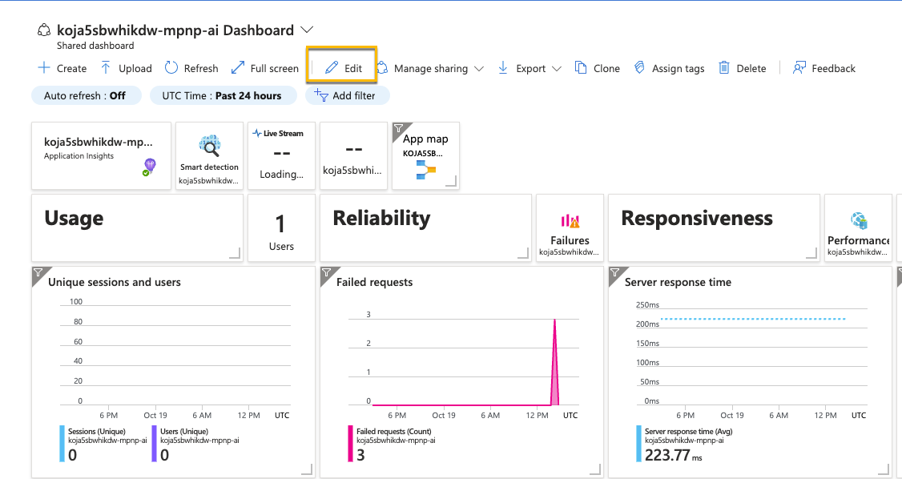
- After making a few changes, name your new custom dashboard and save it.
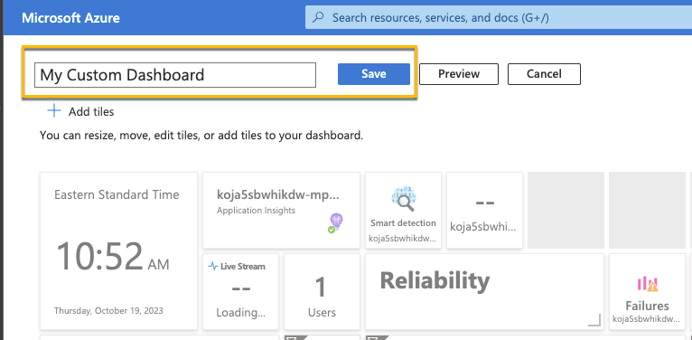
- Your new custom dashboard is now selected and is the new default dashboard for App Services.
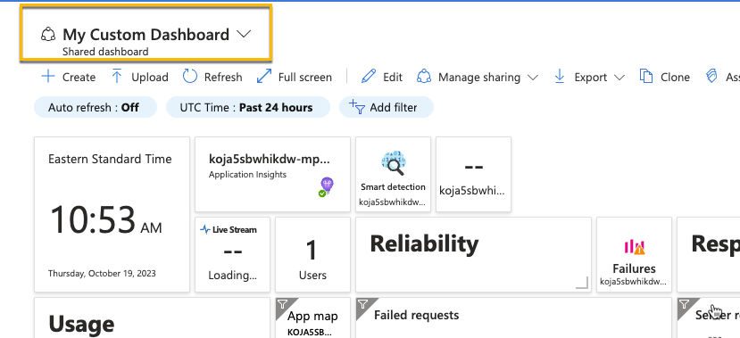
- Setup a Classic Test for your production site (or any other site)
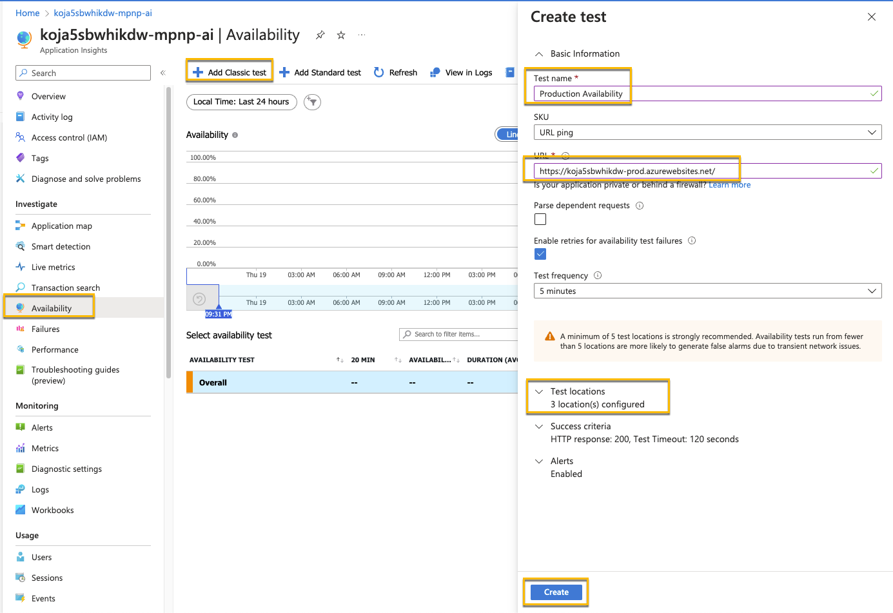
- This can be repeated for Dev and Test as well.
- After a few minutes you’ll start seeing data coming in.
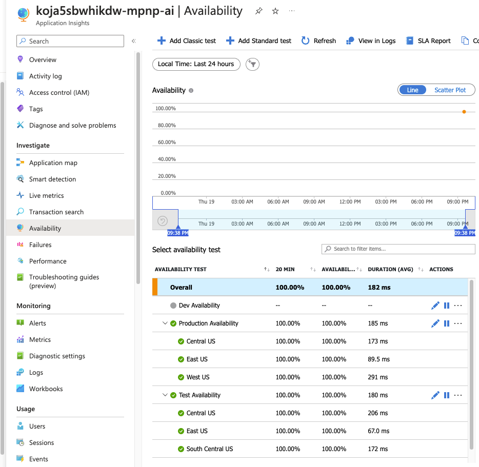
- To see what happens when an app in unavailable, you can turn of one of your apps.
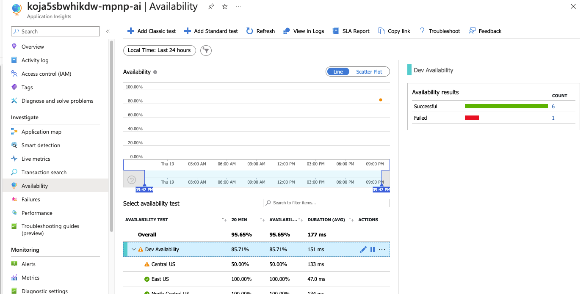
- If you want alerts based on the site availability, select the ellipsis by the test and select “Open rules (Alerts) page”.
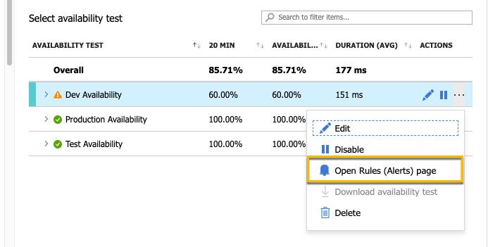
- There will be a default alert created for failed applications. You can also select “+ Create” if you want add additional rules.
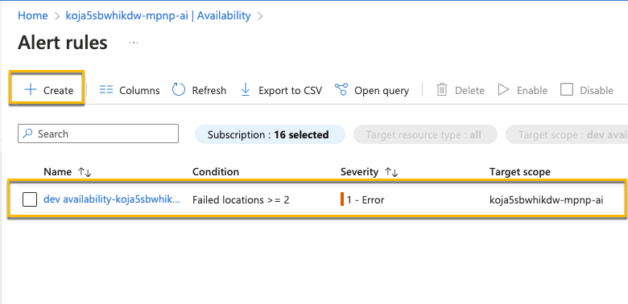
- If you want to explore creating additional alerts, feel free. But nothing else needs to be created.